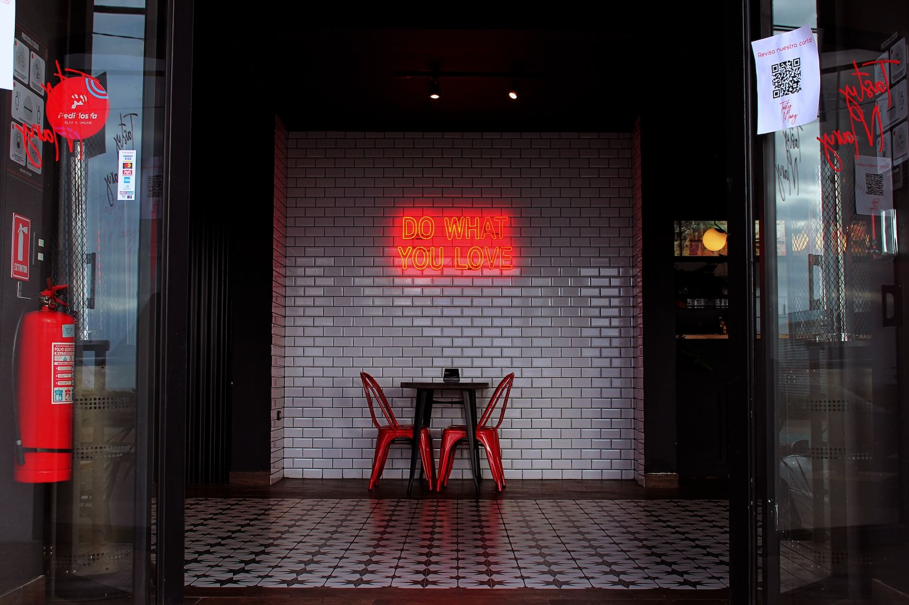

Juntos desde 1970
Don Barrigón, un rincón atemporal de la deliciosa tradición culinaria, ha sido el secreto mejor guardado de la ciudad de Gonzalez Catan desde 1970. Este encantador bodegón, anclado en el corazón de la ciudad, ha mantenido su esencia y autenticidad a lo largo de las décadas, convirtiéndose en un verdadero emblema gastronómico de la región.A lo largo de más de cinco décadas, Don Barrigón ha mantenido su compromiso con la calidad y la tradición, convirtiéndose en un lugar donde la comida, la historia y la comunidad se entrelazan de una manera única. Es un tesoro culinario que perdurará en el tiempo y continuará deleitando a las generaciones venideras.
Diseño Innovador y Mejorado

No importa si eres un visitante ocasional o un cliente de toda la vida, Don Barrigón te hace sentir como en casa. Con su ambiente acogedor y su comida excepcional, es el lugar perfecto para celebrar ocasiones especiales o simplemente disfrutar de una comida reconfortante después de un largo día.El servicio en Don Barrigón es excepcional. El personal, que parece conocer a todos los clientes por su nombre, añade un toque personal y amigable a la experiencia. Son expertos en recomendaciones y siempre están dispuestos a compartir historias sobre la historia del bodegón.
Experiencia Culinaria

La estrella indiscutible de Don Barrigón es su menú clásico. Platos que han perdurado a través de generaciones, como la "Don Barribacon", una mezcla perfecta de sabores que te reconforta en los días más fríos, o el "Don Chicken Classic", una exquisita combinación de pollo que se derrite en tu boca. Además, la carta de Ensaladas presenta una selección cuidadosamente elegida para realzar cada comida.